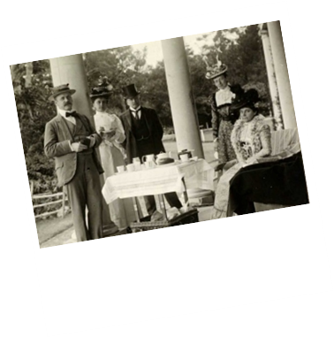

תה נחשב המשקה
הלאומי של בריטניה
צריכת תה ממוצעת
כוסות ליום לאדם
טיפה של היסטוריה
התה הגיע לאנגליה מהולנד באמצע המאה ה- 17. בתחילה שתו אותו רק אנשי חצר המלוכה, אך במהרה הפך התה למשקה המועדף של כל יושבי בתי-הקפה, שברבות הימים נקרו "בתי-תה".
שעת התה -
שתיית התה באנגליה מתחלקת לשני מנהגים:
Afternoon tea
מנהג שהחל בשנת 1840 ע"י אנה, הדוכסית מבדפורד, ונועד להפיג את הרעב שבין ארוחת הצהריים לארוחת הערב. הדוכסית ביקשה שיגישו לה מגש עם תה, לחם עם חמאה ועוגה. המנהג התפתח למסיבת תה אליה נהגו אנשי המעמד הגבוה להתהדר בלבוש ובהמשך התגלגל לאירוע חברתי אופנתי ברחבי אנגליה. נהוג היה לשתות תה עם ארוחה קלה לצד שולחנות נמוכים.
Afternoon tea, 1898
High tea
מנהג שרווח בקרב מעמד הפועלים שחזרו לביתם לאחר יום עבודה קשה,
כאשר במהלך ארוחת הערב שתו תה חם כשהם ישובים על כסאות ושולחנות גבוהים.
באנגליה תשתה כאנגלי
- פיית הקנקן תהיה מופנית אל המארחים.
- יש לשתות כשהזרת באוויר (לספלים לא היו ידיות וכך היו מייצבים את הספל).
- יש ללגום את התה באיטיות.
- יש לערבב את התה מעט פעמים ובעדינות.
- הוספת החלב- בעבר הוסיפו את החלב לפני התה מחשש שהחרסינה העדינה והיקרה תיסדק מחום התה. היום החרסינה עמידה.
- אין לשתות תה עם חלב עם לימון יחד משום שעלולים להיווצר גבישי חלב בתה .
- אין להרים את תחתית הספל כאשר יושבים ליד שולחן, אלא רק כאשר יושבים בסלון .
כלים מסורתיים
כלי חרסינה לבנים, לרוב מעוטרים בפרחים ססגוניים ופס מבריק בזהב או כסף.
אז איזה תה תשתה?
ארל גריי
תערובת תה שחור שמקורו מהודו ומסרי- לנקה, המבושמת בשמן אתרי הממוצה מקליפת תפוז ברגמוט.
אינגליש ברקפסט
תערובת עלי תה שחור שמקורו בסין ובמשך הזמן קיבלה טעמים ממדינות שונות בדרום אסיה, בעלת טעם מלא ועשיר.
קיימים גם סוגי תה הנקראים סקוטיש ברקפסט ו-אייריש ברקפסט הנבדלים מעט זה מזה בהרכב שלהם ולכן הסקוטיש הוא החזק מבין השלושה והאייריש מלוח יותר הודות לרכיב התה ההודי (אסאם) שהוא מכיל.
למידע נוסף על משפחת התה השחור.